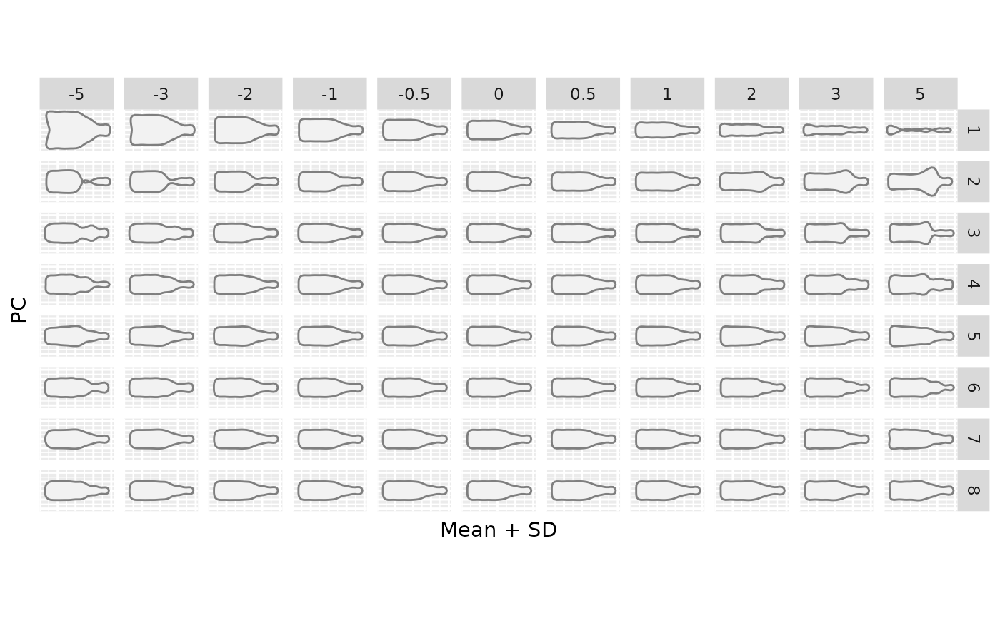
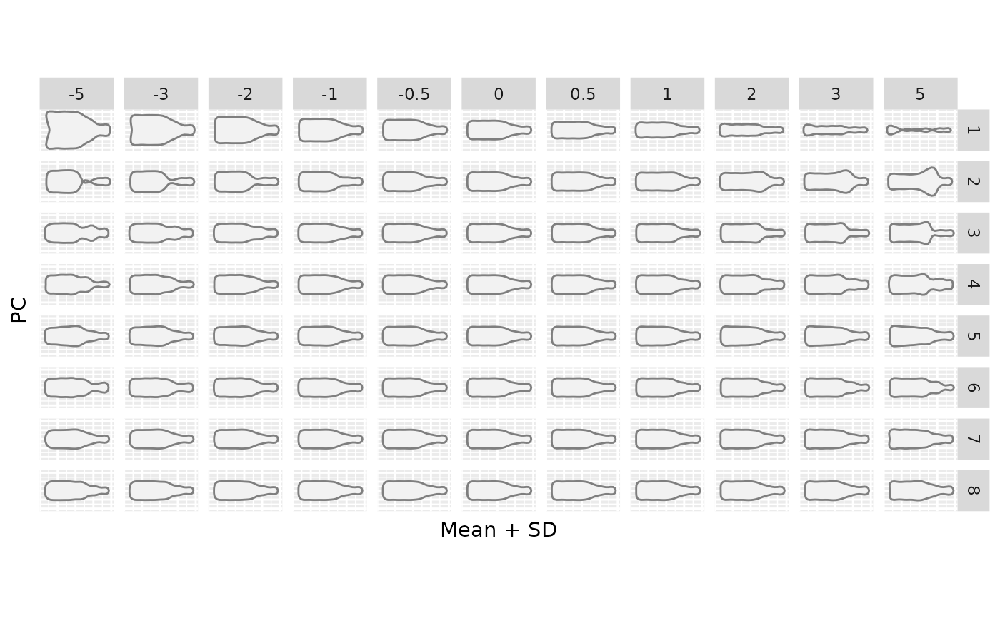

Calculates and plots shape variation along Principal Component axes.
Usage
PCcontrib(PCA, ...)
# S3 method for PCA
PCcontrib(PCA, nax, sd.r = c(-2, -1, -0.5, 0, 0.5, 1, 2), gap = 1, ...)Arguments
- PCA
a
PCAobject- ...
additional parameter to pass to
coo_draw- nax
the range of PCs to plot (1 to 99pc total variance by default)
- sd.r
a single or a range of mean +/- sd values (eg: c(-1, 0, 1))
- gap
for combined-Coe, an adjustment variable for gap between shapes. (bug)Default to 1 (whish should never superimpose shapes), reduce it to get a more compact plot.
Examples
bot.p <- PCA(efourier(bot, 12))
#> 'norm=TRUE' is used and this may be troublesome. See ?efourier #Details
PCcontrib(bot.p, nax=1:3)
#> Warning: `mutate_()` was deprecated in dplyr 0.7.0.
#> ℹ Please use `mutate()` instead.
#> ℹ See vignette('programming') for more help
#> ℹ The deprecated feature was likely used in the Momocs package.
#> Please report the issue at <https://github.com/MomX/Momocs/issues>.
 # \donttest{
library(ggplot2)
gg <- PCcontrib(bot.p, nax=1:8, sd.r=c(-5, -3, -2, -1, -0.5, 0, 0.5, 1, 2, 3, 5))

gg$gg + geom_polygon(fill="slategrey", col="black") + ggtitle("A nice title")
# }
# \donttest{
library(ggplot2)
gg <- PCcontrib(bot.p, nax=1:8, sd.r=c(-5, -3, -2, -1, -0.5, 0, 0.5, 1, 2, 3, 5))

gg$gg + geom_polygon(fill="slategrey", col="black") + ggtitle("A nice title")
# }